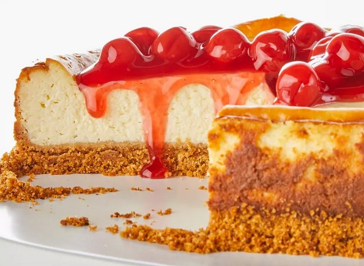

Cheesecake Recipe

This is a cheesecake Recipe
Looking for the best recipe for cheesecake on the internet? Well, you've found it! This easy cheesecake (from Philadelphia, the iconic cream cheese brand) will find a permanent home in your recipe box.
Ingredients
- 1 ¾ cups HONEY MAID Graham Cracker Crumbs
- ⅓ cup butter, melted
- 1 ¼ cups sugar, divided
- 3 (8 ounce) packages PHILADELPHIA Cream Cheese, softened
- 1 cup BREAKSTONE'S or KNUDSEN Sour Cream
- 2 teaspoons vanilla
- 3 Eggs
- 1 (21 ounce) can cherry pie filling
Directions
- eat oven to 350 degrees F.
- Mix graham crumbs, butter, and 1/4 cup sugar.
- Press crumbs onto bottom of 9-inch springform pan.
- Beat cream cheese and remaining sugar in large bowl with mixer until blended. Add sour cream and vanilla; mix well.
- Add eggs, 1 at a time, beating on low speed after each addition just until blended.
- Pour mixture over crust.
- Bake 1 hour to 1 hour 10 minutes, or until center is almost set. Run knife around rim of pan to loosen cake; cool before removing rim. Refrigerate cheesecake 4 hours.
- Top with pie filling before serving.